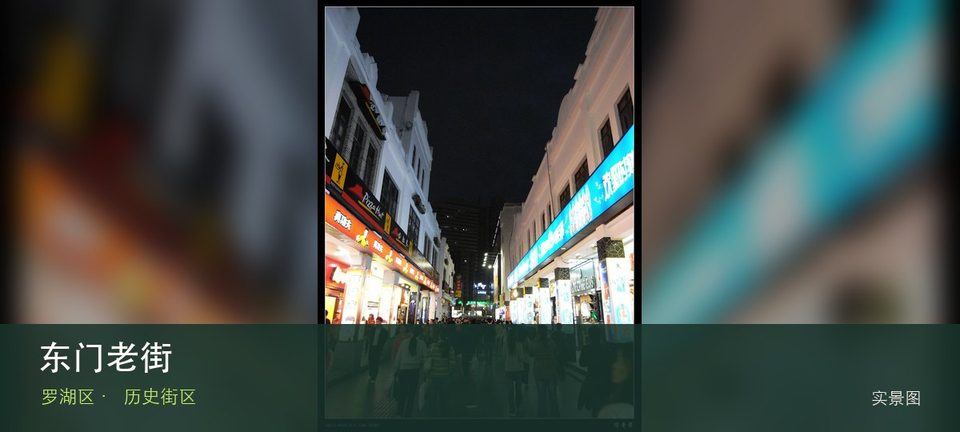

适合谁
适合建筑、地方史和社区观察者；参观时须尊重居民、宗教礼仪与生产秩序。

SHENZHEN GUIDE · 045
老街 · 历史街区
东门老街位于深圳老街片区，今日商业步行街覆盖了深圳墟的历史地层，街巷尺度、老字号与密集商业共同呈现城市从墟市成长的线索。与同类地点相比，最值得停下来的差异落在深圳墟历史线索和老街骑楼与巷道这两个具体节点上。阅读这处地点要把深圳墟历史线索与老街骑楼与巷道放回仍在使用的街巷或社区中，不把历史空间当成布景。先看公开区域，再按居民生活、礼仪和开放边界调整停留，不进入封闭建筑。
WHY GO
适合建筑、地方史和社区观察者；参观时须尊重居民、宗教礼仪与生产秩序。
到达东门老街后先确认深圳墟历史线索是否可进入，再将老街骑楼与巷道作为可取消的第二站；遇拥挤、暴晒或降雨就提前折返。
公共交通先到深圳老街片区，再以东门老街公开参观入口为终点；多入口地点须按计划游线选择入口，并预先锁定返程站点。
车辆停在东门老街外围正规公共停车场后步行进入；不驶入窄巷，不占居民门口、作业区或消防通道。
10 月至次年 4 月步行较舒适；夏季避开正午，雨天留意石板、台阶和老建筑周边湿滑。
NEARBY IDEAS
 编辑配图·非现场实景
编辑配图·非现场实景
东江游击队指挥部旧址位于东门街道南庆街13号，旧址位于深圳墟历史核心区，可把抗战史展陈与东门片区的城市演变放在同一路线阅读。
 编辑配图·非现场实景
编辑配图·非现场实景
湖贝南坊位于东门街道湖贝旧村，首批历史风貌区保留老深圳墟周边村落尺度，旧巷、传统建筑与高密度商业城区形成强烈对照。
地王观光·深港之窗位于罗湖地王大厦，以高层城市观景、深圳与香港城市关系和室内展陈体验为主要看点，适合把老城区、口岸和城市天际线放在同一处观察。